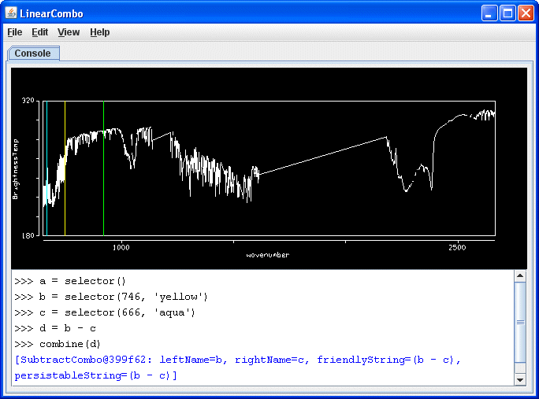

Linear Combination Controls
Overview
The Linear Combinations controls are used to create and perform functions
beyond the standard arithmetic functions in McIDAS-V. The Console tab consists
of two parts - The Spectra and the Console:

Image 1: Linear Combination Controls Window
The Console allows a user to define multiple spectra and perform more complex
mathematical operations.
Command line functions
- selector(wavenumber, color ) - Creates a spectra line with
a optionally defined color and wavelength. If no wavenumber parameter is
found, a data-dependent default value will be used. If no color parameter
is found, the color of the selector bar will default to green. The spectra
line can be dragged between wavelength/wavenumbers.
- Examples:
| a = selector() |
[ Creates a green selector named "a" at a data-dependent wavenumber
or wavelength] |
| b = selector(1000) |
[ Creates a green selector named "b" at wavenumber 1000.0 ] |
| c = selector('cyan') |
[ Creates a cyan selector named "c" at a data-dependent wavenumber
or wavelength] |
| d = selector(919.5, 'red') |
[ Creates a red selector named "d" at wavenumber 919.5 ] |
| e = selector('40', 'orange') |
[ Creates a orange selector named "e" at the wavenumber? associated
with band 40 ] |
| f = selector('11') |
[ Creates a green selector named "f" at the wavenumber associated
with band 11 ] |
- combine(combination, name ) - Computes the mathematical
operation corresponding to the expression entered. The
results are available in the Field
Selector under
the "MultiSpectral"
tree in the Fields tab listed under the optional name.
If no name was specified, the results will be displayed using the expression
that was computed. A combination is required for this
function.
- Examples:
| a = selector('2', 'red') |
[ Creates a red selector named "a" at the wavenumber associated
with band 2] |
| b = selector('1', 'yellow') |
[ Creates a yellow selector named "b" at the wavenumber associated
with band 1] |
| c = ((a-b)/(a+b)) |
[ Creates a variable c that corresponds to the expression ((a-b)/(a+b))] |
| combine(c, 'NDVI') |
[ Results of the "c" variable will appear in the Field
Selector as the "NDVI" entry ] |
| combine((a-b)/(a+b)) |
[ Results of the expression in the combination field
will appear in the Field Selector ] |
- print( ) - Prints out information about the current
wavelength/wavenumber of a selector, or its value.
Linear Combination Properties
- Spectra Window - Use the Shift+left
click+drag combination to create a box of a region to zoom in
on. To re-set the zoom level and return to the full spectra, use Ctrl+left click.
Middle-clicking on a point in the spectra will change the wavenumber
of the image displayed. Right click+drag will move the
spectra left or right. Left click+drag on the
wavelength/wavenumber selector bar(s) will allow you to change the wavelength.